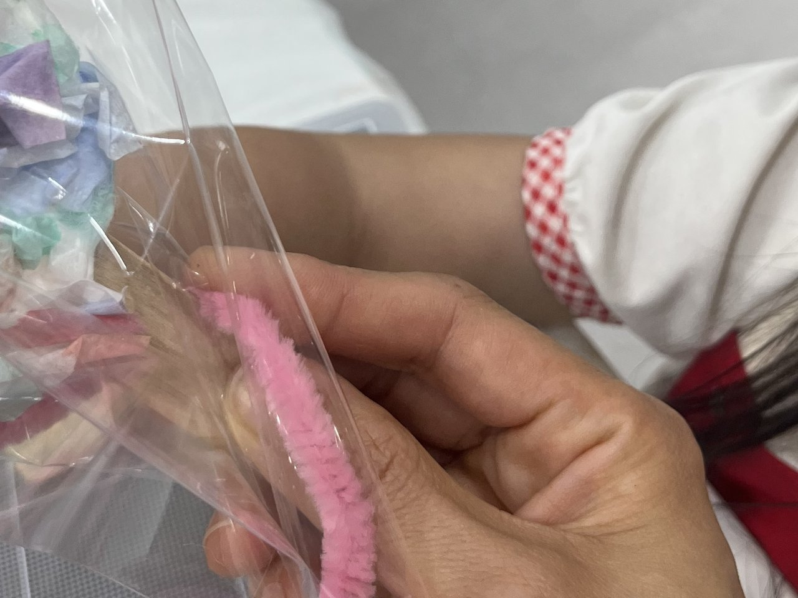

인천시 아동복지관 루원시티로…12년 만에 청사 두 배
4인 가구 월 1039만 원 이하면 상담·치료 무료
AI경제저널=김갑봉 기자 | 인천시 아동복지관이 12년 동안 쓴 인천축구전용경기장 안 청사를 떠나 서해구 루원복합청사로 옮겼다. 새 청사 전용면적은 옛 청사 시설 규모의 두 배를 넘고, 치료실은 5실에서 8실로 늘었다. 복지관 공지에 따르면 새 청사 업무는 9일(월) 시작한다.

경기장 썬큰광장에서 루원복합청사 2층으로
인천시 아동복지관은 만 5세부터 초등학교 6학년까지 아동과 그 가족에게 상담·심리검사·심리치료를 하는 시 기관이다. 1979년 문을 연 부녀아동상담소에 뿌리를 두고, 2013년 12월 아동복지관으로 새로 섰다. 2014년 7월부터는 인천축구전용경기장 북쪽 썬큰광장 시설을 써 왔다.
새 자리는 서해구 염곡로464번길 61 루원복합청사 별관동 2층이다. 이사는 5~6일 이틀 동안 한다. 시는 노후한 옛 시설의 불편을 덜고 보안·안전 시스템을 강화했다고 밝혔다.
옛 청사는 시설 규모 747.05㎡에 상담실 1실, 치료실 5실, 심리검사실 2실, 교육실 2실이었다. 새 청사는 전용면적 1535㎡에 심리상담실 2실, 검사실 2실, 놀이·미술 치료실 8실, 교육실 2실과 쉼터를 갖췄다. 면적은 2.05배다(AI경제저널 계산).
누가, 무엇을 받나
상담과 치료는 기초생활수급, 한부모가족, 차상위계층 같은 법정 저소득 가정이 받는다. 건강보험료로 따져 기준 중위소득 160% 이하인 가정도 대상이다. 비용은 받지 않는다.
아동 심리치료는 놀이·미술·인지·음악·심리운동치료로 주 1회씩 모두 15회기다. 언어치료는 주 2회씩 45회기다. 부모 상담과 가족 심리치료, 부모 그룹치료도 함께 한다.
시설에서 자라는 아이들도 복지관이 맡는다. 아동양육시설 9곳이 추천한 아동에게는 1인 기본 26회 심리치료비를 지원한다. 공동생활가정 17곳에는 심리치료사가 찾아가 12회기 프로그램을 연다.
아동복지관 이전이 가정과 시정에 말하는 것
첫째, 가계의 문턱이다. 올해 복지관 판정표로 4인 가구는 소득 기준 월 1039만2000원 이하가 대상이다. 직장가입자 건강보험료 본인부담금으로는 월 37만4300원 이하다. 2023년 판정표는 기준 중위소득 120%, 4인 가구 648만2000원이었다. 2024년 160%로 넓힌 뒤 같은 4인 가구 기준선은 391만 원, 60.3% 높아졌다(AI경제저널 계산).
판정표의 바탕 숫자는 내년에 바뀐다. 보건복지부는 내년 기준 중위소득을 4인 가구 기준 649만4738원에서 692만9885원으로 6.70% 올렸다. 복지관은 해마다 연초에 새 판정표를 올린다. 올해 판정표는 1월 20일에 올라왔다.
둘째, 시정의 방향이다. 시는 이번 이전으로 서북부권 아동과 가족의 이용이 편해질 것이라고 밝혔다. 새 청사는 인천도시철도 2호선 가정역과 가깝다. 옛 청사는 수도권 전철 1호선 도원역에서 걸어서 5분 거리였다.
치료 인력도 새로 뽑는다. 복지관은 지난달 26일 「2027년 제1차 심리치료사 공개 모집」을 공고했다. 위촉직 3명으로 가족치료사 2명과 미술심리치료사 1명이다. 서류는 10~12일 받는다.
셋째, 신청하는 사람이 알아 둘 것이다. 복지관 누리집 심리치료 안내 쪽 맨 아래에는 아직 「기준 중위소득 120% 이하」 문구가 남아 있다. 같은 쪽 위 안내와 올해 판정표는 160%다. 「찾아오시는 길」 쪽도 5일 현재 옛 경기장 주소를 안내한다.
넷째, 발표에 없는 숫자다. 시는 한 해 몇 명이 상담과 치료를 받는지 밝히지 않았다. 치료를 기다리는 아동이 얼마나 되는지도 발표에 없다. 치료실을 5실에서 8실로 늘린 효과는 이 숫자가 나와야 잴 수 있다.
신청은 전화·방문·기관 추천으로
상담·치료 신청은 전화나 방문으로 하고, 유관기관이 추천할 수도 있다. 문의는 아동복지관 아동지원팀(032-440-8065)이 받는다. 송금주 인천시 아동복지관장은 "아동과 가족이 편안하게 찾을 수 있는 복지 공간이자 지역사회 아동복지의 중심 기관으로 자리매김하겠다"고 말했다.
참고문헌
- 인천광역시 아동복지관(2026). 인천시 아동복지관, 루원복합청사 이전… 아동복지 서비스 강화(보도자료, 붙임 hwpx 포함). 2026년 11월 5일. https://www.incheon.go.kr/IC010205/view?repSeq=DOM_0000000015911315
- 인천광역시 아동복지관(2026). 아동복지관 청사 이전 안내. 2026년 10월 22일. https://www.incheon.go.kr/cwc/CW040101/3091892
- 인천광역시 아동복지관(2026). (공고) 2027년 제1차 인천광역시 아동복지관 심리치료사 공개 모집. 2026년 10월 26일. https://www.incheon.go.kr/cwc/CW040101/3092318
- 인천광역시 아동복지관. 일반현황(연혁·시설규모)·심리치료 사업안내·아동ㆍ가족 상담·아동양육시설 아동 심리치료 지원·공동생활가정 아동 방문 심리치료 지원·찾아오시는 길. https://www.incheon.go.kr/cwc/CW050201 외
- 인천광역시 아동복지관. 2023년 기준중위소득 120%(2023.1.12)·2024년(2024.1.19)·2026년(2026.1.20) 기준중위소득 160% 건강보험료 소득판정기준표. https://www.incheon.go.kr/cwc/CW040301/3061135 외
- 보건복지부 기초생활보장과(2026). 내년 기준 중위소득 6.70% 역대 최대 인상(보도자료). 2026년 7월 28일. https://www.mohw.go.kr
[사진 출처]
- [사진1] 인천광역시 아동복지관 사진 게시판 「2026 제1기 아동교육프로그램(토탈미술)수료식 및 수업사진」, 공공누리 제1유형, 2026.6.5., https://www.incheon.go.kr/cwc/CW040201/3075763
관련기사
- 인천 주민자치박람회 7일 월미도…주민자치회 법제화 뒤 첫 한마당
- 인천 공인중개사 연수교육 미수료자, 12월까지 6차례 추가 교육
- 인천 로봇기업 8곳 "현장 같은 시험장 달라"…로봇랜드 테스트베드 밑그림
저작권자 © AI경제저널 무단전재 및 재배포, AI학습 및 활용 금지